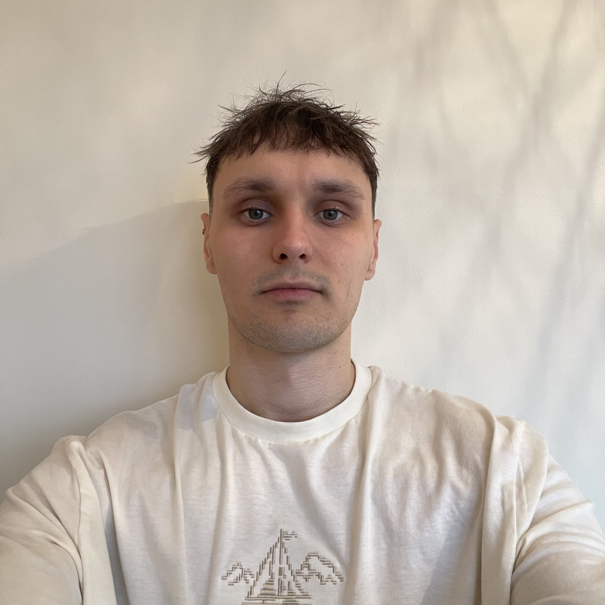

Football Scout & Performance Analyst | Talent ID & Tactical Profiling
Performance-driven football scout specialising in player evaluation, tactical analysis, and recruitment profiling. Proven ability to translate match data and observations into clear, actionable insights for coaches and decision-makers.
I analyse player and team performance to produce structured, role-specific scouting reports. My work combines sports science principles with tactical understanding to support recruitment and performance decisions.
Full match analysis including tactical structure, key patterns, and role-specific player evaluations with actionable recommendations.
Live first-team scouting report with full 11-player evaluation, focusing on individual performance, technical ability, physical profile, and decision-making.
Opposition-focused analysis examining tactical structure, in-possession patterns, out-of-possession behaviour, and potential match risks.
Multi-match player assessment exploring role suitability, tactical impact, technical profile, and key decision-making tendencies.
Designed and developed a football analysis platform enabling managers to track squad performance, analyse players, and improve decision-making through structured data and match insights.